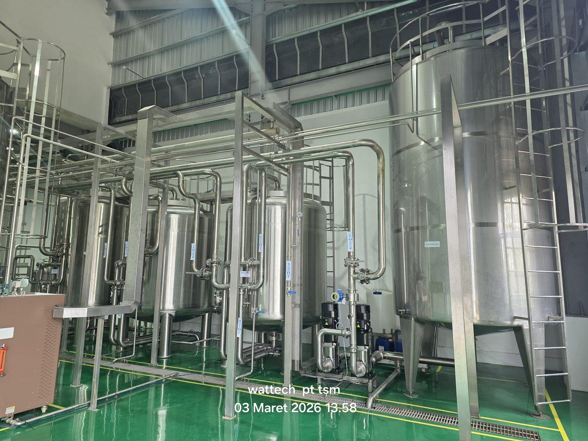

15+
Unit BWRO Terpasang
250+
m³/jam Total Kapasitas
8+
Tahun Kerjasama
5
Anak Perusahaan
Tentang Proyek Sinarmas Forestry
Operasi nursery skala besar membutuhkan suplai air bersih dengan kualitas konsisten dalam volume sangat besar untuk pembibitan tanaman industri (akasia, ekaliptus, dll). Sumber air baku di lokasi nursery umumnya air payau (brackish water) dari sumur dalam atau air permukaan dengan kekeruhan tinggi yang tidak dapat langsung digunakan.
TSM menyediakan kombinasi Clarifier System (untuk pre-treatment), Ultrafiltration (untuk reduksi turbidity), dan BWRO System (untuk demineralisasi) yang dirancang khusus untuk operasi 24/7 di lingkungan nursery dengan peralatan minim perawatan.
📌 Studi Kasus Lengkap: PT Sinar Mas Forestry
Untuk studi kasus mendalam tentang penerapan BWRO di site nursery dan dampaknya pada produktivitas pembibitan, baca studi kasus Sinarmas Forestry →
Daftar Proyek per Anak Perusahaan
🌱 PT Bumi Andalas Permai (BAP) — Palembang
| Tahun | Sistem | Lokasi |
|---|---|---|
| Agu 2025 | BWRO Cap. 20 m³/jam × 2 Unit | Nursery Lebong Hitam |
| Jan 2022 | BWRO Cap. 20 m³/jam × 2 Unit | Nursery Central — Sugihan OKI |
| Jan 2022 | BWRO Cap. 15 m³/jam × 4 Unit | Nursery Air Sugihan — Sugihan OKI |
| Agu 2020 | Water Tank Zinc Alum 360 m³ | Nursery Central Baung |
| Nov 2021 | Water Tank Zinc Alum 360 m³ | Nursery Central Baung |
| Jul 2018 | Clarifier & UF System Cap. 15 m³/jam (2 Set) | Air Sugihan |
| Mar 2020 | WTP Klarifier & RO Cap. 40 m³/day | Site Central Baung — OKI Palembang |
| Jan 2020 | WTP Clarifier & UF System Cap. 15 m³/day | Baung Blok D — OKI Palembang |
| Jul 2016 | SWRO Cap. 1.000 LPH | Site RAM (Sinarforestry) — Palembang |
| Jul 2016 | SWRO Cap. 1.000 LPH | Site DBT (Sinarforestry) — Palembang |
| Jan 2017 | SWRO Cap. 500 LPH (4 Unit) | 4 Site: Air Sugihan, Tanjung Jati, Simpang Heran, Jelutung |
🌳 PT Bumi Mekar Hijau (BMH) — Palembang
| Tahun | Sistem | Lokasi |
|---|---|---|
| Agu 2025 | BWRO Cap. 20 m³/jam | Nursery Padang Sugihan |
| Mar 2022 | BWRO Cap. 20 m³/jam × 2 Unit | Nursery Lebong Hitam — Sugihan OKI |
| Mar 2022 | BWRO Cap. 20 m³/jam × 1 Unit | Nursery Sungai Gebang — Sugihan OKI |
| Agu 2023 | WTP Cap. 1 m³/jam & Rumah WTP | Distrik Sungai Serdang — Palembang |
| Agu 2018 | Clarifier & UF System Cap. 15 m³/jam | Site Beyuku — Palembang |
🌲 PT SBA Wood Industries — Palembang
| Tahun | Sistem | Lokasi |
|---|---|---|
| Agu 2023 | WTP Cap. 1 m³/jam & Rumah WTP | Distrik Kuala Lumpur — Palembang |
| Agu 2023 | WTP Cap. 4 m³/jam & Rumah WTP | Distrik Sungai Riding — Palembang |
| Agu 2023 | WTP Cap. 1 m³/jam & Rumah WTP | Simpang Mun — Palembang |
| Mar 2022 | BWRO Cap. 15 m³/jam × 2 Unit | Nursery Sungai Beyuku — Sugihan OKI |
| Jun 2018 | Clarifier & BWRO System Cap. 15 m³/jam | Lebong Hitam — Palembang |
| Jan 2017 | BWRO Cap. 210 LPH | Palembang |
| Feb 2018 | RO System Cap. 210 LPH | Palembang |
🌿 PT Surya Hutani Jaya & Lainnya — Kalimantan Timur
| Tahun | Sistem | Lokasi |
|---|---|---|
| Sep 2025 | Water Tank Zinc Alum 533 m³ × 2 Unit | Nursery Sebulu — PT Surya Hutani Jaya |
| Feb 2021 | RO Cap. 500 LPH (3 Unit) | Sinarmas Nursery — Distrik Lebong Hitam (PT DutatransAbadi) |
🌾 PT Ciptamas Bumi Subur — Palembang
| Tahun | Sistem | Lokasi |
|---|---|---|
| Mei 2024 | WTP Cap. 2 m³/jam & Rumah WTP | Distrik Muara Sugihan — Palembang |
| Agu 2023 | WTP Cap. 2 m³/jam & Rumah WTP | Distrik Muara Sugihan — Palembang |
Mengapa TSM Dipilih oleh Sinarmas Forestry
- Kapasitas Skala Besar — TSM mampu mendesain dan memasang BWRO 15-20 m³/jam dengan teknologi membran terkemuka (Dow, Toray) untuk operasi nursery skala industri.
- Kombinasi Clarifier + UF + RO — pre-treatment lengkap untuk menghadapi air baku dengan turbidity dan bahan organik tinggi yang umum di lahan nursery.
- Track Record Multi-Site — pengalaman menangani 15+ unit di lokasi-lokasi terpencil (Sugihan OKI, Lebong Hitam, Beyuku, Sebulu) dengan logistik yang menantang.
- Konstruksi Rumah WTP — TSM tidak hanya memasok unit, tapi juga membangun rumah/shelter WTP yang sesuai standar lapangan.
- Service & Spare Parts Aktif — TSM menyediakan suku cadang dan layanan service rutin untuk seluruh unit terpasang.